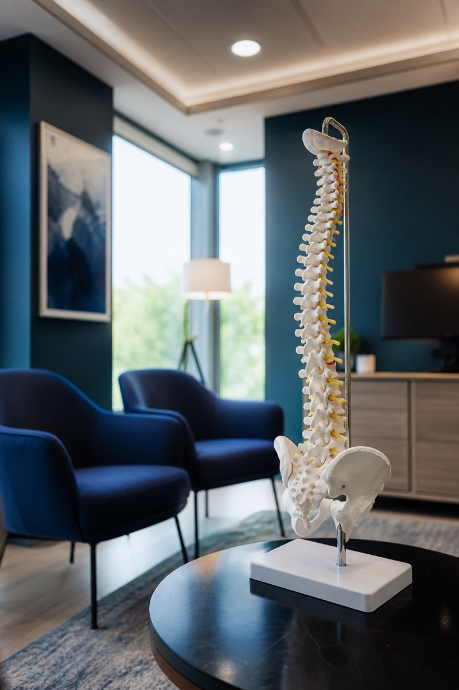

Neck Pain & Cervical Spondylosis
Desk work across Bengaluru South makes cervical spondylosis and neck pain common. Care starts with posture, physio and ruling out nerve compression.
Desk work across Bengaluru South makes cervical spondylosis and neck pain common. Care starts with posture, physio and ruling out nerve compression.

Most mechanical neck pain improves in weeks. Nerve symptoms may take longer.